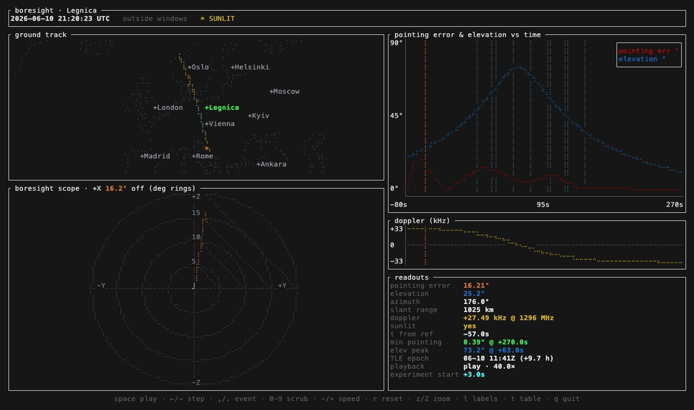

The boresight TUI replays a spacecraft pass in your terminal and shows, second by second, how well the spacecraft held its aim at a ground target.
Given the pass' attitude telemetry and a TLE, boresight propagates the orbit, reconstructs the body attitude, and measures the angle between the chosen boresight axis and the line to the target. A ground track, a boresight error scope, and a synchronized pointing-error / elevation chart all share one timeline, so they move together as you play, scrub, or jump between events.
By georges.fyi at Tanagra Space, under the MIT License.

What It Shows
- Ground track over a coastline map with major world capitals, the target, and the moving sub-satellite point, colored sunlit / in eclipse.
- Boresight error scope: a polar view with the target plotted at a radius equal to the pointing error, green when on target and fading through amber to red as it drifts.
- Pointing-error & elevation chart versus time, with the windows of interest marked and a playback cursor.
- Doppler / range-rate strip showing the signed curve crossing zero at closest approach.
- Analysis tables: a per-window summary and a scrollable whole-pass table at a step you choose.
Quick Start
git clone https://github.com/tanagraspace/boresight
cd boresight
cargo build --release
# run a bundled example
examples/config/run.sh # everything from one config file
examples/minimal/run.sh # minimum required input
examples/legnica-2026-06-10/run.sh # the full set of input params and flagsInputs can be passed as flags or bundled in a single TOML file: an attitude CSV, a TLE (inline or a file), a target by lat/lon or ECEF, the boresight axis, windows of interest, and an optional carrier frequency for Doppler. Non-interactive --dump-table, --snapshot, and --export-csv modes are available for previews, docs, and downstream analysis.